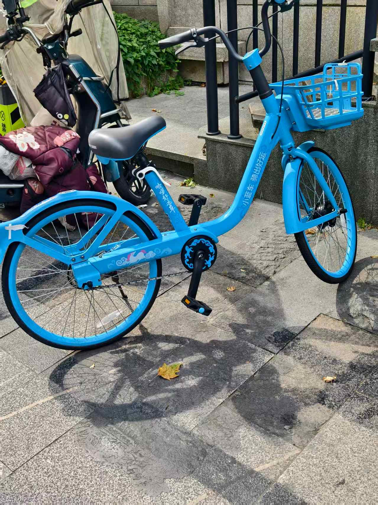
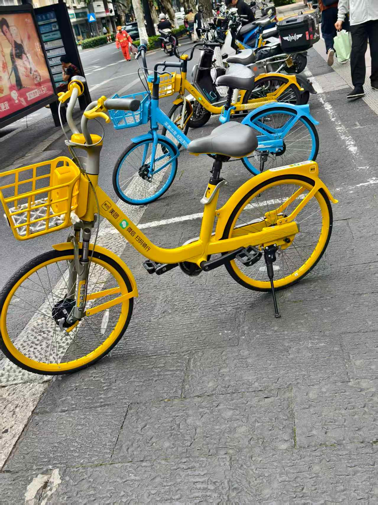
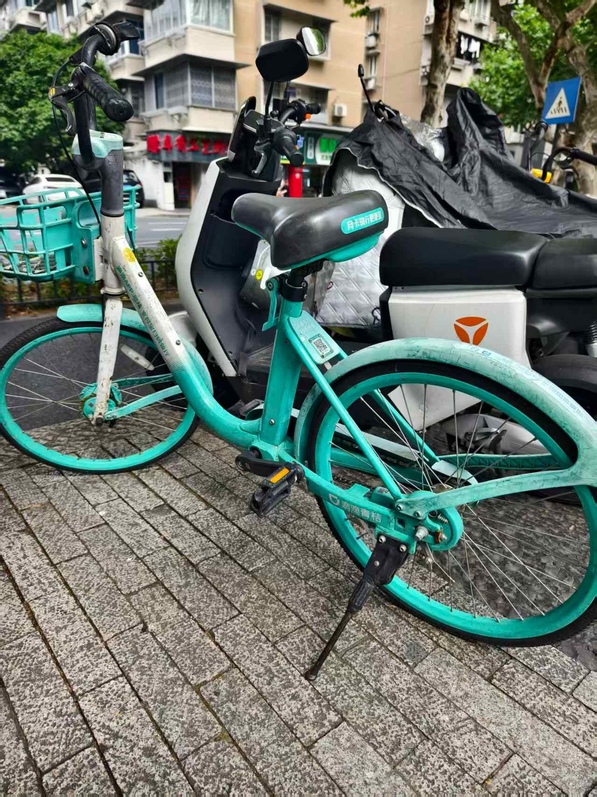
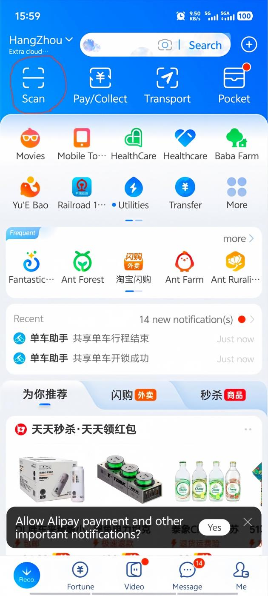
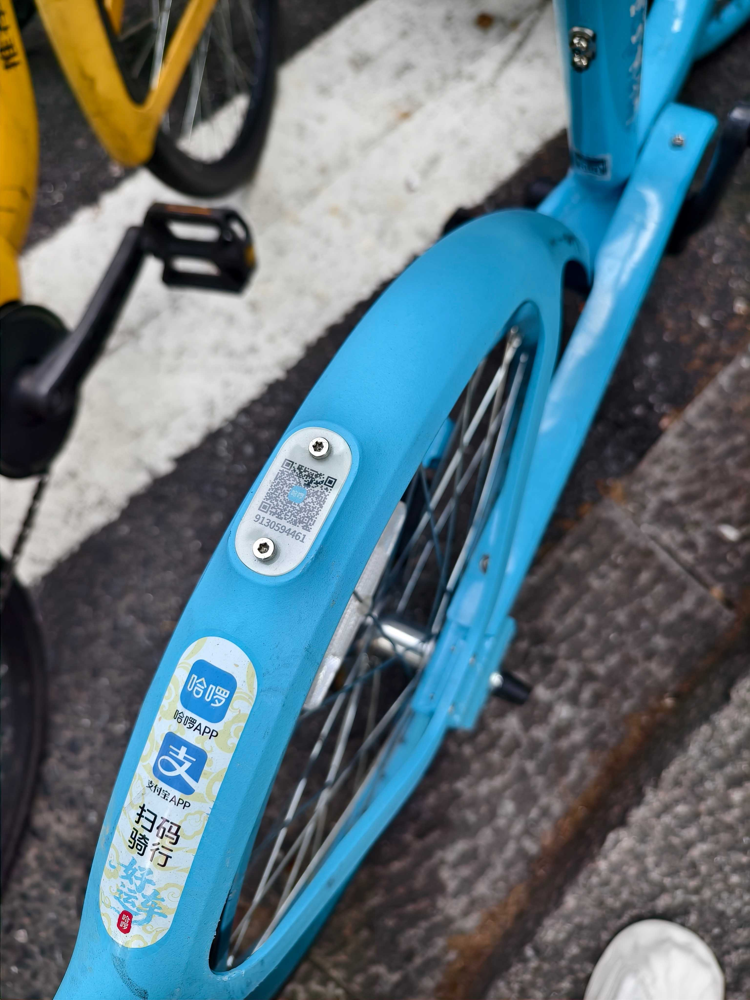
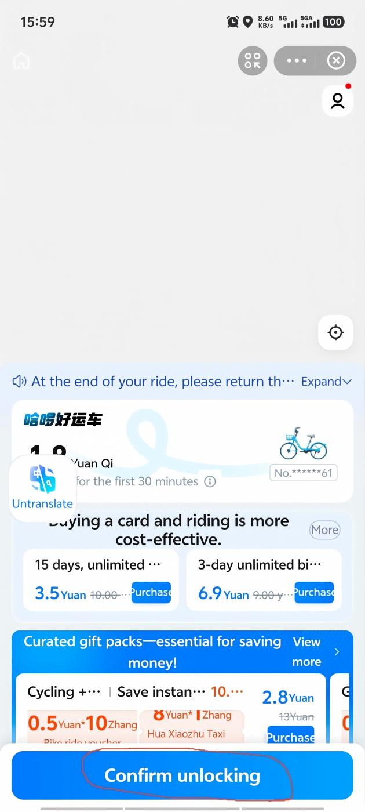
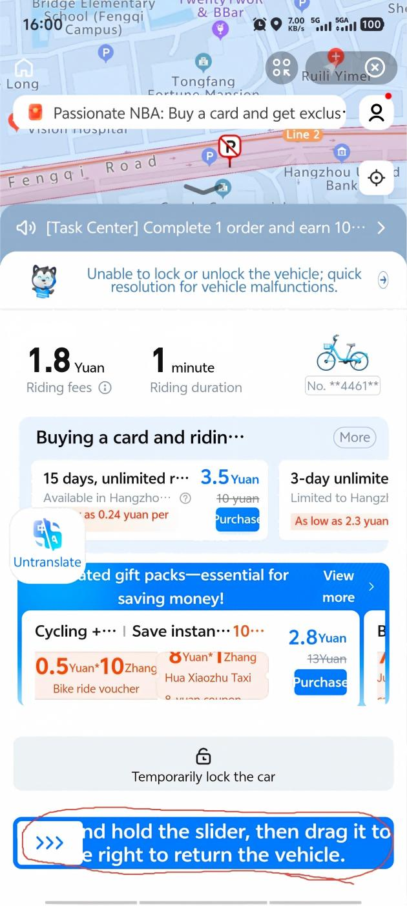
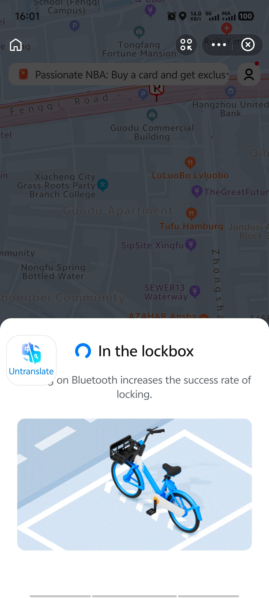
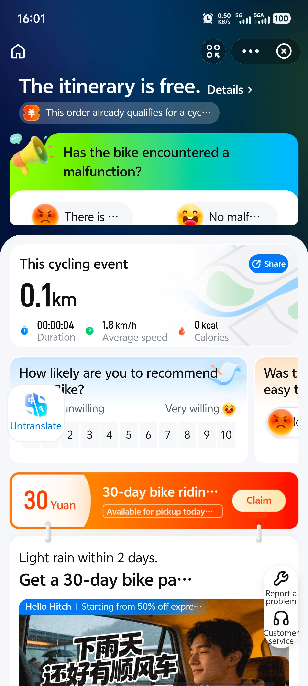

How to Use Shared Bikes in China with Alipay
TL;DR — The Short Version
- Shared bikes are everywhere in major Chinese cities
- You don't need a separate app —Alipay or WeChat scans the QR code directly
- Three main brands: Hellobike (blue), Meituan Bike (yellow), DiDi Qingju (green)
- It costs around ¥1.5–2 per ride ($0.20–0.40 USD). Seriously.
- Always park inside the painted rectangle on the ground — or the system won't let you return the bike
Why Shared Bikes Matter
Chinese cities are big. Not "take a nice walk and you'll get there" big —"the nearest metro station is a 20-minute walk, and you're already tired from walking 18,000 steps through a museum" big. A shared bike turns a sweaty 20-minute walk into a breezy 5-minute ride. It's often faster than waiting for a DiDi in traffic, costs almost nothing, and — honestly — riding through a Chinese city at street level, wind in your hair, is one of the most underrated travel experiences here.
And they're everywhere. Outside every metro exit. Clustered at every intersection. Leaning against fences near tourist spots. You can't walk 200 meters in any Chinese city without seeing a row of colorful bikes waiting for you. The system works: scan, ride, park, walk away. No docking station, no reservation, no key.
The Three Bikes You'll See Everywhere
Hellobike (哈啰 Hāluō)
Bright blue. The most common bike in most cities. Hellobike (sometimes branded "Hello" in English) is the biggest player — you'll see these at basically every metro station. Clean bikes, good app experience, reliable unlocking.

Meituan Bike (美团单车 Měituán Dānchē)
Bright yellow. Owned by Meituan, the mega-app that does everything from food delivery to hotel booking. These used to be the old "Mobike" brand. Same concept, just yellow. You'll see a lot of these in bigger cities.

DiDi Qingju Bike (滴滴青桔 Dīdī Qīngjú)
Cyan / mint green. Run by DiDi, the ride-hailing giant. "Qingju" means "green tangerine." These have a slightly lighter frame and are common in cities where DiDi has a strong presence. The unlocking experience is identical to the other two.

All three brands work the same way: open Alipay or WeChat, scan the QR code on the bike, tap unlock, and ride. In most cases, you can unlock through Alipay without downloading a separate bike app; requirements may vary by brand, city, and account status. If you have Alipay set up with a foreign card (which you should —here's how), you're good to go.
How to Unlock & Ride — Step by Step (Hellobike + Alipay)
I'll walk through the exact flow with Hellobike and Alipay, because that's what my friends use most. But here's the secret: unlocking Meituan Bike or DiDi Qingju is exactly the same. The button is always at the bottom of the screen, the process is identical. Once you've done one, you've done them all.
1 Open Alipay and tap "Scan"
On the Alipay home screen, the Scan button is in the top-left corner. Don't overthink this — it's a prominent icon, hard to miss. Tap it to open the QR scanner.

2 Scan the QR code on the bike
Point your phone at the QR code. It's usually on the rear mudguard (the plastic cover over the back wheel), right below the seat. On some bikes it's on the frame under the seat. Either way — it's clearly visible, usually printed on a small white sticker or a metal plate.

3 Tap "Unlocking"
After scanning, Alipay shows a screen with the bike details and a button at the bottom. Tap "Unlocking" (解锁). This is always at the bottom of the screen — for Hellobike, Meituan Bike, and DiDi Qingju, the unlock button is always in the same spot. You really can't miss it.

4 Wait a few seconds — the lock opens
The bike makes a cheerful beeping sound, the electronic lock on the rear wheel clicks open, and Alipay shows a confirmation screen with a timer. You're now riding. The bike is yours until you return it. At the bottom of this screen you'll see the "Return the Vehicle" button — this is what you'll tap when you're done. (Meituan Bike and DiDi Qingju put the return button in the exact same place.)

5 Park inside the painted rectangle
When you're done riding, you must park the bike inside a designated parking zone. These are rectangles painted on the ground — usually white or yellow lines — near metro stations, intersections, and busy areas. The app uses GPS to check your location. If you try to return the bike outside a zone, it simply won't let you. (This is not a suggestion. The system will reject the return and keep charging you until you move it into a zone.)
The good news: parking zones are everywhere. You'll almost always find one within 20 meters of where you want to stop.

6 Tap "Return the Vehicle" — done
Tap the return button. The lock engages with a click, the timer stops, Alipay shows a ride summary (distance, time, cost), and you're done. Walk away. No docking, no key, no human interaction. Just a bike and a city.

How Much Does It Cost?
Almost nothing. Seriously:
- Hellobike: Usually ¥1.5 per 30 minutes (about $0.21 USD). Pricing varies by city and brand — check the in-app prompt before unlocking.
- Meituan Bike: Similar pricing, typically ¥1.5–2 per 30 minutes.
- DiDi Qingju: Also around ¥1.5–2 per 30 minutes.
Some brands offer a weekly or monthly pass — ¥10–15 for unlimited 30-minute rides over 7 days, which is great value if you're using bikes daily. You'll see the pass offer when you unlock your first bike. But honestly, at ¥1.5 per ride, you don't really need it unless you're staying more than a week.
Payment is automatic through Alipay or WeChat Pay. Usually no separate deposit or top-up is needed when using Alipay/WeChat mini-programs — it just charges your linked card after each ride. My friend rode 11 times across four days in Hangzhou and his total bill was ¥16.50 — that's $2.30 USD, or less than a single bus fare in most European cities.
Common Mistakes First-Timers Make
Every traveler I've helped has made at least two of these. Learn from them:
- Scanning a broken bike. You'll see a row of 15 bikes and instinctively scan the nearest one. Take 3 seconds to squeeze the brakes and spin the pedals first. A stuck brake or a flat tire means you've just wasted a scan — and on a busy morning, the good bikes disappear fast.
- Parking outside the marked zone. The app won't let you return the bike. You'll stand there tapping "Return" over and over, getting increasingly frustrated, while the timer keeps ticking. The fix is simple — push the bike 10— 0 meters into the nearest painted rectangle — but the first time it happens, you won't know what's wrong.
- Forgetting to tap "Return." You park the bike, walk into a café, order a coffee, and 45 minutes later realize the ride is still running. The lock engages automatically on some models, but the billing doesn't stop until you tap that button. Always wait for the ride-complete screen before walking away.
- Riding on sidewalks. In many countries, bikes share the sidewalk with pedestrians. Not in China. Sidewalks are for walking; bike lanes are for bikes. Riding on the sidewalk will get you dirty looks, shouted at, or — if you're unlucky — a fine. Stay in the bike lane.
- Checking Google Maps while riding. Google Maps doesn't work reliably in China without a VPN or roaming eSIM. Even if it does, staring at your phone while weaving through e-bike traffic is a terrible idea. Memorize your next turn, or pull over. You're not in a rush — the bike costs ¥1.5 per half hour.
Things to Know Before You Ride
- Helmets: Shared bikes do not come with helmets — bring your own if you prefer riding with one. Almost nobody wears one locally, but you'll see the occasional rider with their own.
- Night riding: All three bike brands have built-in lights — the front basket has a small LED, and the rear mudguard has a red reflector. They're adequate, but if you're riding at night on unfamiliar roads, go slower.
- Rain: Shared bikes have solid rubber tires (no punctures), but they're slippery on wet roads. The brakes are less effective in rain. If it's pouring, just take the metro — it's ¥2— and deliciously air-conditioned.
- Phone mount: Some newer bikes have a phone holder on the handlebars. Most don't. If you need navigation, memorize the next turn before you start riding, or pull over to check your phone. Don't hold your phone while cycling — it's dangerous, and you may drop it.
- Bike condition check: Before you scan, give the bike a quick once-over. Squeeze the brakes, check the tires, spin the pedals. Most bikes are in good shape, but occasionally you'll find one with a stuck brake or a wobbly seat. Just scan a different one — there's always another bike 10 meters away.
- You need internet: Unlocking requires a data connection. If your eSIM is acting up or you're between WiFi zones, you can't unlock a bike. This is another reason to have a reliable data plan — see our eSIM guide.
What If Something Goes Wrong?
- QR code won't scan? Try shading the code with your hand — direct sunlight can cause glare. If it still won't work, the code might be damaged. Just walk to the next bike.
- Lock won't open after paying? Rare, but it happens. Close Alipay, reopen, and scan again — it won't charge you twice. If the lock still won't budge, manually report it in the app (there's a "bike broken" option) and grab another bike.
- Can't return because "outside parking zone"? Open the bike-share mini-program within Alipay — it'll show nearby parking zones on a map. Usually you just need to push the bike 10— 0 meters.
- Forgot to return the bike? The timer keeps running. A friend once left a bike unlocked outside a restaurant for 90 minutes and got charged ¥4.50 — not the end of the world, but avoid it. The app sends a notification if your ride exceeds 30 minutes.
Get the Free China Arrival Checklist
Shared bikes, metro cards, DiDi setup, Alipay walkthrough — everything you need for getting around Chinese cities, in one PDF.
Get the Free Checklist